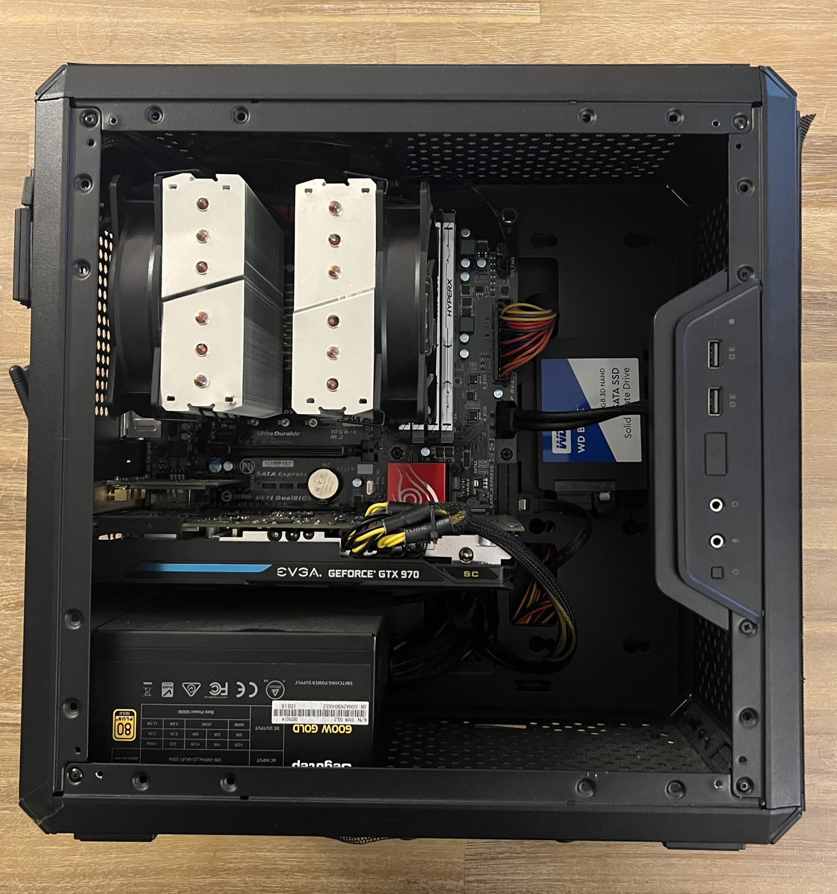

001 · Home Lab
Proxmox Home Server
Overview
I repurposed an old PC into a Proxmox server to learn networking hands-on and move my files and services off big tech cloud storage and onto hardware I control.
Right now the server is set up and nothing more. Proxmox is installed on the hardware below, and I have not configured it yet.
Specifications
- Platform
- Proxmox VE
- Processor
- 4 x Intel(R) Core(TM) i5-4690K CPU @ 3.50GHz (1 Socket)
- Memory
- 16 GB RAM
- Storage
- 500 GB SSD
- Kernel
- Linux 6.8.12-9-pve
- Status
- Set up, not yet configured
Goals
- Learn networking hands-on instead of only reading about it
- Move my files and services off big tech cloud storage
- Run everything on hardware I control, built from a repurposed old PC
Pictures & video
